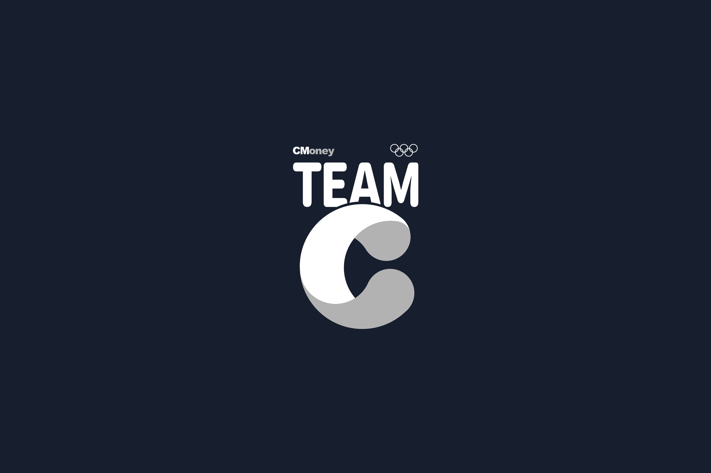

What I made我的設計
以「TEAM C」作為核心視覺，代表 CMoney 福委會團隊，傳遞團結合作與團隊榮譽感。融合奧林匹克五環、運動會象徵元素與裝飾性圖形，呼應雅典競技精神，透過圖像整合與視覺編排，打造兼具運動活力與團隊識別的制服設計。

Overview
為 CMoney 公司年度尾牙設計福委會工作人員制服，以「雅典運動會」為活動主題，結合古希臘競技精神與團隊文化，打造兼具主題辨識度、活動氛圍與團隊凝聚力的專屬服裝。
以「TEAM C」作為核心視覺，代表 CMoney 福委會團隊，傳遞團結合作與團隊榮譽感。融合奧林匹克五環、運動會象徵元素與裝飾性圖形，呼應雅典競技精神，透過圖像整合與視覺編排，打造兼具運動活力與團隊識別的制服設計。
將年度尾牙主題轉化為具象的團隊識別視覺，使工作人員制服不僅具備活動識別功能，更成為凝聚團隊向心力、強化成員歸屬感與營造活動氛圍的象徵。
Proposal
以「雅典運動會」為尾牙主題，提出四款圖樣方向，最終由 C 款「TEAM C」定案。


Final design
以「TEAM C」代表 CMoney 福委會團隊，C 字以立體翻轉的造型呈現，搭配奧林匹克五環墜飾，讓圖像更完整協調；在深色帽 T 上以白、灰兩色呈現，低調又有團隊識別。
C90 M87 Y65 K50C0 M0 Y0 K0C0 M0 Y0 K30On body